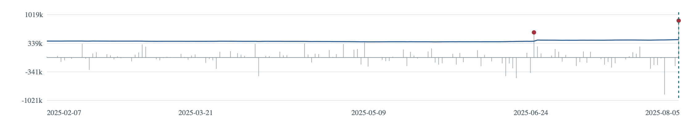
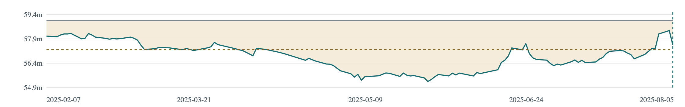
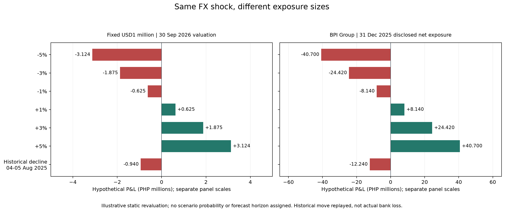
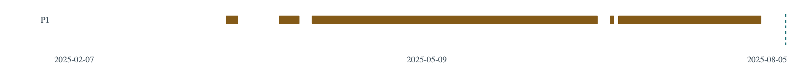

When a dollar position loses ₱878,000
What could a risk officer have known before the peso strengthened? A historical USD/PHP study follows one hypothetical holding from its first valuation to the evidence behind an exception.
Contents and supporting material
Executive summary
Between the BSP observations dated 4 and 5 August 2025, the peso value of one US dollar fell from ₱58.392 to ₱57.514. For a fixed long position of USD1 million, that movement represents a valuation loss of ₱878,000. The prior 99% historical Value at Risk (VaR) was ₱425,719.97. The officer reviewing this interval would have seen a loss ₱452,280.03 above the estimate.
This study reconstructs that comparison across a frozen series of published rates. Of 1,390 evaluated intervals, 22 had losses above prior VaR. Exceptions occurred more frequently across gaps of several calendar days. Those intervals cover different elapsed times, and few contain exceptions, so the difference warrants investigation before an operational interpretation.
The companion dashboard places each outcome beside its source dates, prior estimate, drawdown and review evidence. Separate stress scenarios describe the peso impact of specified moves. The results support a traceable historical review of a hypothetical holding under a fixed set of assumptions.
Study evidence · Exact target results · Exception endpoint register
The question behind the exchange rate
A market-rate bulletin tells an officer how many pesos one dollar buys. To decide which movements deserve review, the officer also needs the size and direction of the exposure, an estimate made before the movement, and a way to trace the outcome to its source. The case holds the exposure constant so that each change in peso value comes from the exchange rate alone. Philippine research on a long USD exposure provides a local starting point (Consolacion, 2016).
Research objectives
The overall objective was to design and evaluate a repeatable way to measure FX valuation changes and prioritize observations for human review. This required documenting the source and its gaps, measuring returns and peso P&L, estimating and backtesting historical VaR, challenging the window and quantile choices, and reporting the evidence behind each flag. A separate objective examined how a specified shock would affect a dated BPI Group disclosure.
Research questions
- How did the size and variability of USD/PHP changes vary across the study?
- How did those changes affect the peso value of the fixed holding?
- How often did a subsequent loss exceed the prior VaR, and over which intervals?
- What peso impacts followed from the predefined shocks, for the holding and the separate BPI illustration?
- How did the timing of exceptions and sensitivity to modelling choices affect interpretation?
- What information would let a reviewer trace and document an observation?
From an observation to a review
The research design is a quantitative case study. Each original pair of available rates defines one change. Multiplying the change by the holding gives its peso P&L. Replaying earlier percentage changes on the starting value produces a distribution of hypothetical losses. Once the subsequent observation arrives in the historical sequence, the model estimate can be compared with the outcome (Cassidy & Gizycki, 1997).
Drawdown adds a different reference point, the highest value observed so far. A stress scenario instead starts with a specified movement and asks what it would cost. Each measure feeds a different part of the review. The officer can check the underlying records, document an unresolved question and decide what to investigate next. This emphasis on traceability draws on risk-reporting principles described by the Basel Committee on Banking Supervision (BCBS, 2013).
Methodology
Data provenance
The source was the Bangko Sentral ng Pilipinas (BSP) historical cross-rates workbook, worksheet peso cross daily, column B. Sampled reconciliations matched the United States dollar row labelled PHIL. PESO EQUIVALENT in same-date bulletins. Two September 2026 bulletins describe the underlying measure as a prior trading-day weighted average. The documentation available across earlier years does not establish continuity of that definition (BSP, n.d.-a). Source reconciliation.
The raw table preserved each source row, date, value or missing marker, and the workbook fingerprint. Staging assigned numeric rates and recorded calendar evidence. From 1 January 2020 through 30 September 2026 there were 2,465 calendar rows, including 1,648 numeric endpoints and 817 missing markers. Of the missing dates, 704 were weekends, 106 were verified national non-working days, and seven had an unresolved publication cause.
Pairing consecutive numeric endpoints produced 1,647 original intervals. Of these, 1,640 qualified as main calendar candidates. The seven review intervals remained identifiable in the ledger and were excluded from main VaR training and evaluation. No rate was filled, substituted or treated as zero. The unit of analysis is an interval between published source dates. Historical public availability and economic trading timestamps are unverified. Original interval ledger.
Valuation, volatility and the prior estimate
Let Q be the fixed long USD1 million and S the rate in PHP per USD. A declining rate means that the same dollars buy fewer pesos. Signed loss is positive when the position loses value and negative when it gains.
Interval P&L = Q × (end rate − start rate)
Signed loss = −P&L
Simple return = end rate / start rate − 1
Exploration used the standard deviation of observed percentage changes to describe volatility, including rolling windows of 20 changes. For each VaR target, the model selected the latest 250 earlier eligible changes and applied each one to the target's starting peso value. Sorting the signed scenario losses in ascending order and taking the 99% higher quantile selected rank 248. The signed result was retained.
A subsequent exact signed loss strictly greater than this prior estimate counted as an exception. Exact equality counted as a nonexception. The ₱0.01 near-tie flag was reserved for review and did not change the classification. The first evaluated interval ran from 19 to 20 January 2021. A 500-change window and a linear quantile provided sensitivity checks. Pritsker (2001) describes how historical simulation can respond slowly to changing risk, which motivated testing the window choice. Modelling contract.
Stress and monitoring rules
The stress calculation revalued the holding after ±1%, ±3% and ±5% rate changes and one historical percentage decline. The scenarios have no assigned probabilities or forecast horizon (BCBS, 2018). The dashboard displays them as a dated reference. Its two investigation signals are a VaR exception with the peso exceedance amount and a drawdown measured from the full-study running peak.
The peak starts at the first available valuation and carries across years. The illustrative 3% episode begins when an observed valuation is at least 3% below its running peak. The first subsequent observation above that line ends the episode. A return to the previous peak and completion of a review are separate events. Indicator specification.
What the historical record shows
The annual gain concealed losses within 2022
The exchange rate rose from ₱50.974 on 3 January to ₱56.120 on 29 December 2022. Inside that interval, the hypothetical holding fell from its observed October peak of ₱58.994 million to ₱55.130 million on 23 December. The within-year drawdown was ₱3.864 million, or 6.5498%. A reviewer looking only at the first and last valuation would miss that decline.
Variability also changed within the year. The standard deviation of the 20 changes from 16 May to 13 June was 0.160868 percentage points. For the window from 28 November to 29 December it was 0.487180. These are the lowest and highest observed 2022 windows, selected retrospectively. Across complete years, the standard deviation in 2023 was 0.3448%, slightly above the 0.3394% observed in 2022. The 2026 comparison covers only January through September. They describe how much the changes varied, while the signed P&L gives their financial direction. Exploration notebook, sections on drawdown and rolling volatility.
Losses exceeded VaR more often across longer gaps
The main backtest recorded 22 exceptions in 1,390 targets. Separating calendar gaps shows where the aggregate result deserves closer inspection.
| Target group | Evaluated | Exceptions | Rate |
|---|---|---|---|
| All eligible targets | 1,390 | 22 | 1.5827% |
| One calendar day | 1,069 | 12 | 1.1225% |
| More than one day | 321 | 10 | 3.1153% |
Target endpoints from 20 January 2021 through 30 September 2026. Main backtest records.
In the August 2025 example, the loss exceeded prior VaR while the position was only 2.5153% below its running peak. A single large loss can merit investigation before cumulative drawdown reaches the illustrative 3% line.

Window choice and exception spacing
On the same 1,140 targets, the 250-change model had 15 exceptions, the 500-change model had 18, and the 250-change model with a linear quantile had 17. The common target set begins later because the longer model needs more history. Including all seven review changes in training left the main exception classifications unchanged. Under full inclusion, the additional evaluable targets brought the total to 1,397 with 22 exceptions. Validation summary.
Coverage and timing address distinct questions (Christoffersen, 1998). No two exceptions were consecutive among valid adjacent evaluated pairs. Three exceptions nevertheless occurred within nine original intervals in July–August 2022. In an exploratory diagnostic preserving skipped intervals, 2,323 of 20,000 random placements produced a span that close or closer. The episode merits inspection, although this post-inspection comparison supplies little basis for a claim of predictable clustering. Exception spacing and random-placement results.

How often would the reviewer see a new crossing?
Over the study, the 2%, 3% and 4% thresholds produced 20, 15 and 12 new crossings respectively. The corresponding counts of observations at or below the line were 891, 733 and 591. Following the October 2022 peak, the first crossings came on 14 November, 24 November and 1 December respectively. The 2% threshold called for review earlier in this decline and stayed active over more observations across the study. Choosing an operational trigger would require a documented loss tolerance and review capacity. Threshold results.
What would a specified shock cost?
The September 2026 baseline valued the USD holding at ₱62.485 million, using ₱62.485 per dollar on 30 September. A separate illustration used BPI Group's positive ₱814 million net USD on-balance-sheet exposure in peso equivalent as of 31 December 2025. The consolidated Group amount is distinct from the Parent Bank disclosure. Its peso-equivalent denomination allows direct multiplication by the shock percentage (Bank of the Philippine Islands, n.d., Note 26.2.1).
| Scenario | Fixed USD1 million | BPI Group illustration |
|---|---|---|
| −1% | −₱624,850 | −₱8.14m |
| −3% | −₱1,874,550 | −₱24.42m |
| −5% | −₱3,124,250 | −₱40.70m |
The largest percentage decline across all 1,647 original intervals, including the seven review intervals, was approximately 1.5036306% on 4–5 August 2025. Applying the exact return to the September 2026 baseline gives a ₱939,543.60 valuation loss. The August 2025 loss was ₱878,000 because it began from a different rate. Original selection uses exact returns, with earliest end date and original interval order as tie breakers. Stress contract.

Following one case in the dashboard
Open 5 August 2025. The four tiles identify the original interval, peso loss, VaR exception and next review step. The evidence panel points to workbook rows 17391 and 17392. A reviewer can inspect the endpoint audit and the prior training window, then record findings and uncertainty in a note attached to that item. The browser can save and export the note with its interval ID and data fingerprint. Open the historical dashboard.
Use the year, month and day controls, the interval arrows or the review queue to move through the series. The three linked timelines stop at the selected source date by default. “Show later observations” reveals labelled retrospective context. Separate tabs hold full-study findings, stress scenarios and methodology. An unavailable VaR shows the reason. A continuing drawdown keeps its shared episode record.

What the checks establish
The original project reconciled 44 main-exception endpoint dates to source evidence. Its stress safeguards passed 18 acceptance tests and six notebook cells in a fresh kernel. All 14 stress P&Ls matched the original exact results. A portable replay from the bundled extract checks all 1,390 main VaR targets and 14 stress rows. The packaged notebooks are reading copies. Repeating the original acquisition and source audit requires the separately held evidence workspace. Reproduction scope.
An independent dashboard retest reported 76 isolated software assertions. A guided browser walkthrough covered navigation, print scope, selected evidence links and note persistence. Other browsers, native behavior under denied storage, and an independent first-time reader test remain open. These checks support the tested review workflow.
Limitations that affect the interpretation
Timing. A weekend or holiday can explain the calendar gap while leaving the underlying market horizon uncertain. This limits comparison with an operational one-day VaR. Exposure. A constant unhedged position isolates FX revaluation. Trading, funding, interest, transaction costs and hedge adjustments would change actual P&L.
Tail evidence. A 250-change sample places the 99% cutoff near a few observations. A different window or quantile rule changes which losses exceed it. Drawdown. The full-study peak can remain the reference for a long time. The 2022 within-year example uses a different starting anchor. Stress. Specified movements have no assigned likelihood and do not bound potential losses. BPI's reporting date is documented, while original public availability and total economic sensitivity remain uncertain.
Conclusion
On 5 August 2025 the hypothetical position generated a VaR exception while remaining above the 3% drawdown line. The officer could identify the affected interval, quantify the excess and inspect the same source records that produced it. That is the decision this prototype supports.
For further evaluation, compare drawdown anchors and examine the mixed-gap coverage result on a later, independently reserved period. An institution adopting a review threshold would also need to specify how much loss warrants investigation and how many reviews its team can handle.
Repository guide · Contributions and assistance · Sharing review
References & data sources
BSP observations are freely available from the publisher. The study selected the USD field, retained original source dates and rows, and derived intervals, valuations and risk measures. The package excludes the raw workbook, full PDFs, database and private note exports. Source credit and reuse conditions are documented in the sharing review (BSP, n.d.-b).
- Bangko Sentral ng Pilipinas. (n.d.-a). Philippine peso cross rates [Data set, USD column, frozen study extract through September 30, 2026]. BSP exchange-rate statistics.
- Bangko Sentral ng Pilipinas. (n.d.-b). Terms of use. BSP website terms.
- Bank of the Philippine Islands. (n.d.). 2025 BPI integrated report (Note 26.2.1, pp. 276–277). Integrated reports.
- Basel Committee on Banking Supervision. (2013). Principles for effective risk data aggregation and risk reporting. Bank for International Settlements. Publication.
- Basel Committee on Banking Supervision. (2018). Stress testing principles. Bank for International Settlements. Publication.
- Cassidy, C., & Gizycki, M. (1997). Measuring traded market risk: Value-at-risk and backtesting techniques (Research Discussion Paper No. 9708). Reserve Bank of Australia. Paper.
- Christoffersen, P. F. (1998). Evaluating interval forecasts. International Economic Review, 39(4), 841–862. https://doi.org/10.2307/2527341
- Consolacion, A. G. (2016). Comparative analysis of value at risk, stressed VaR, and expected shortfall using Philippine data. Bangko Sentral Review, 1–10. Journal issue.
- Pritsker, M. G. (2001). The hidden dangers of historical simulation (Finance and Economics Discussion Series No. 2001-27). Board of Governors of the Federal Reserve System. Research abstract.
The literature matrix records the depth of the original review. The owner shaped scope and reporting decisions and performed guided browser checks. AI assistance supported code, verification and editing.